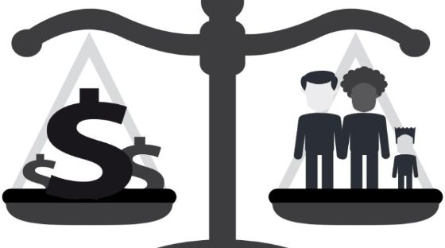

El clasismo es una actitud discrimintoria de una persona con un nivel socioeconómico major hacia otra persona con un nivel socioeconómico menor. Esto habla de lo soberbio que puede ser alguien, porque las personas no valemos por lo que tenemos, sino por lo que somos. La solución sería dejar de pensar en este tipo de cosas y dejar de pensar que unas personas son mejores por la clase social en la que están.
Solucion José Miguel: Primeramente respetar al prójimo, y pensar que la gente no gana nada con hacer ese tipo de comentarios y que por ninguna razón deberían descriminar a las personas.

Solución Alejandro García: Cuando vea que alguien hace esos comentarios hacia alguien más, explicarle que hacer eso no está bien y hacer conciencia en la sociedad a cerca de este tema.
Página de José Miguel Página de Alejandro García